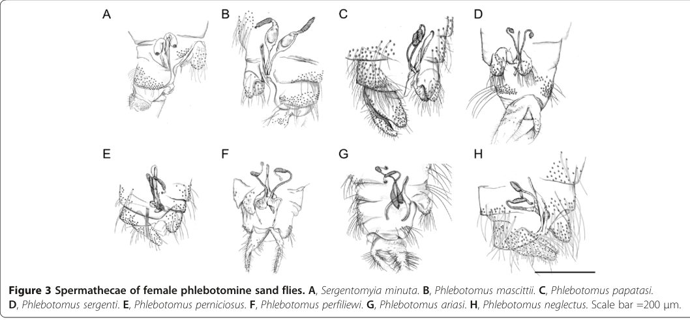

Keys › Italy (comparison key)
Italy (comparison key)
Illustrated key to the eight Italian species. Included as a Mediterranean comparison and a model of clear illustration.
| Source | Dantas-Torres, F., Tarallo, V.D. & Otranto, D. (2014) Morphological keys for the identification of Italian phlebotomine sand flies (Diptera: Psychodidae: Phlebotominae). Parasites & Vectors 7: 479. https://doi.org/10.1186/s13071-014-0479-5 |
|---|---|
| Region | Italy |
| Sexes | both |
| Size | 14 couplets, 8 terminal taxa, 1 leads with notes (⚠) |
G1 Cibarial teeth in a transverse row and pigment patch usually present (Fig. 1A). Hind end of abdominal tergites 2-6 with all or most setae recumbent, which arise from small sockets as compared with those on tergite 1 (Fig. 1B). Male style with 3 apical and 1 sub-apical long spines developed and 1 more basal setiform spine (accessory seta) (Fig. 2A). Female spermathecae smooth (Fig. 3A) ⚠



Note: The only Sergentomyia species reported in Italy.
G1′– Cibarial teeth and pigment patch usually absent (Fig. 1C). Hind end of abdominal tergites 2-6 with many erect setae, which arise from large sockets of the same size as those on tergite 1 (Fig. 1D). Male style with 2 long apical spines (Fig. 2B, D-H) or 3 short apical spines (Fig. 2C) and setiform spine absent. Female spermathecae with superficial striation (Fig. 3B) or annulated (Fig. 3C-H)
Genus Phlebotomus→ G2
G2 Male
G2′– Female
M1 Coxite (= basistyle) with bristles in the basal region
M1′– Coxite without bristles in the basal region
M2 Style (= dististyle) short with 4 long spines: 2 apical and the internal more basal than the external spine. Paramere without dorsal ramification. Surstyle (= lateral lobe) without short distal spines (Fig. 2B)
M2′– Style with 5 short spines: 3 apical and 2 external spines in its apical third. Paramere with 2 dorsal ramifications. Surstyle with 2 short distal spines (Fig. 2C)
M3 Aedeagus with the distal region tapered and cup-like expansion at the anterior end of genital pump thin-walled and colourless (Fig. 2D)
M3′– Aedeagus with the distal region bifid or rounded
Subgenus Larroussius→ M4
M4 Aedeagus with colourless plate (transparent process) on terminal portion (Fig. 2E)
M4′– Aedeagus without colourless plate on terminal portion
M5 Aedeagus bifid at the end (Fig. 2F)
M5′– Aedeagus not bifid at the end
M6 Aedeagus clapper-like, with moderate subapical expansion (Fig. 2G)
M6′– Aedeagus with drumstick-like tip (Fig. 2H)
F1′– Spermathecae ringed. Pharynx not as above
F2 Spermathecae without neck
F2′– Spermathecae with long finger-like neck
Subgenus Larroussius→ F4
F4 Spermathecae with lateral structures at the base of the ducts
F4′– Spermathecae without lateral structures at the base of the ducts